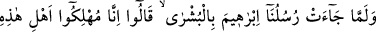
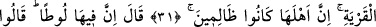
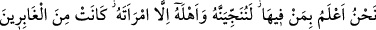
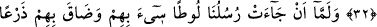
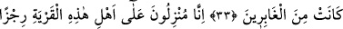
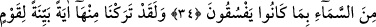
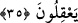
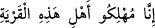

YOLDAN ÇIKMALARINA
KARŞILIK FECÎ BİR AZAB
31. Elçilerimiz İbrahim’e (iki oğul ihsan edeceğimize dair) müjdeyi
getirdiklerinde şöyle dediler: Biz bu memleket halkını helâk edeceğiz. Çünkü
oranın halkı zâlim kimselerdir.
32. (İbrahim) dedi ki: Ama orada Lût var! Şöyle cevap verdiler: Biz orada
kimlerin bulunduğunu çok iyi biliyoruz. Onu ve ailesini elbette kurtaracağız. Yalnız
karısı müstesna; o, (azapta) kalacaklar arasındadır.
33. Elçilerimiz Lût’a gelince, Lût onlar hakkında tasalandı ve (onları korumak
için) ne yapacağını bilemedi. Ona: Korkma, tasalanma! Çünkü biz seni de aileni de
kurtaracağız. Yalnız, (azapta) kalacaklar arasında bulunan karın müstesna, dediler.
34. “Biz, şüphesiz, bu memleket halkının üzerine, yoldan çıkmalarına karşılık
gökten (feci) bir azab indireceğiz.”
35. Andolsun ki, biz, aklını kullanacak bir kavim için oradan apaçık bir ibret
nişânesi bırakmışızdır.
“Elçilerimiz” Cebrâil (a.s.) ve beraberindeki melekler, “İbrahim’e”, doğacak oğlu
(İshak) ile torunu (Ya’kub) olmak üzere (iki oğul ihsan edeceğimize dâir) müjdeyi”
getirdiklerinde” sözlerini de te’kîd için ayrıca “şöyle dediler: Biz bu memleket” yâni
Sodom “halkını helâk edeceğiz.”
“__WORD__ cümlesindeki izâfet; izâfet-i lafziyyedir. Çünkü mânâsı,
müstakbeldir, yâni gelecek zaman ifâde eder.
“Çünkü oranın halkı” şirk ve küfürle peygamberlerini yalanlayan ve çeşitli
kötülükler işleyen “zâlim kimselerdir.”